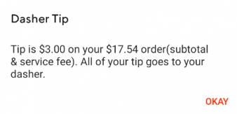

|
Doordash tricks innocent users into believing their tip is going to the driver. This is a real prompt in the checkout menu of the app, shown by tapping the "i" icon.  Using this example, a customer would believe that their $3 is being sent to the driver as a tip. While the tip may technically be going to the driver, it's also saving Doordash $3, so in the end, the driver would get paid the same if the customer tipped $3 or $0. |
Watch a video giving a visual explanation with real proof. | Doordash's response: |
| The driver agreement: | What you can do: | Resources: |